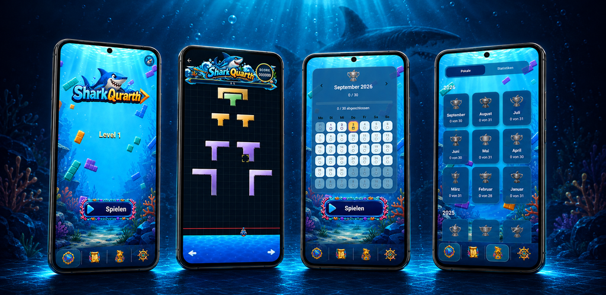

Besonderes Arcade-Puzzle
Jeder Schuss zählt: Triff die richtige Spalte und lass ganze Blockgruppen verschwinden.
Shark Quarth verbindet taktisches Denken mit schnellen Reaktionen: Bewege dein Schiff, feuere farbige Blöcke ab und schließe jede Formation, bevor sie die Gefahrenlinie erreicht.

Ein farbenfrohes Spiel für eine schnelle Runde – mit genug Tiefe, um deine Statistik immer weiter zu verbessern.
Jeder Schuss zählt: Triff die richtige Spalte und lass ganze Blockgruppen verschwinden.
Bewege dich nach links und rechts, visiere deine Lücke an und feuere im richtigen Moment.
Jeden Tag wartet eine eigene Challenge auf dich. Vervollständige ganze Monate.
Verfolge gelöste Level, sammle Monatspokale und beobachte deinen Fortschritt.
Wähle deinen Lieblingshai, sammle Erfahrungspunkte und steige im Profillevel auf.
Flüssige Animationen, passende Sounds und kleine Erfolgsmomente bei jeder Auflösung.
Plane voraus, ziele präzise und räume das Spielfeld auf, bevor die Formen die Gefahrenlinie erreichen.
Nach oben ↑